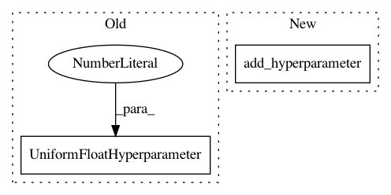

fb01effccf0c2271b1c4a81da55d8d1c6e009d2f,autosklearn/pipeline/components/classification/xgradient_boosting.py,GradientBoostingClassifier,get_hyperparameter_search_space,#Any#,140
Before Change
UnParametrizedHyperparameter("min_weight_fraction_leaf", 0.))
subsample = cs.add_hyperparameter(UniformFloatHyperparameter(
name="subsample", lower=0.01, upper=1.0, default=1.0, log=False))
max_features = cs.add_hyperparameter(UniformFloatHyperparameter(
"max_features", 0.5, 5, default=1))
max_leaf_nodes = cs.add_hyperparameter(UnParametrizedHyperparameter(
name="max_leaf_nodes", value="None"))
After Change
// Unparameterized Hyperparameters
max_delta_step = cs.add_hyperparameter(UnParametrizedHyperparameter(
name="max_delta_step", value=0))
colsample_bytree = cs.add_hyperparameter(UnParametrizedHyperparameter(
name="colsample_bytree", value=1))
gamma = cs.add_hyperparameter(UnParametrizedHyperparameter(
name="gamma", value=0))
colsample_bylevel = cs.add_hyperparameter(UnParametrizedHyperparameter(
name="colsample_bylevel", value=1))
In pattern: SUPERPATTERN
Frequency: 3
Non-data size: 2
Instances
Project Name: automl/auto-sklearn
Commit Name: fb01effccf0c2271b1c4a81da55d8d1c6e009d2f
Time: 2016-04-12
Author: eggenspk@informatik.uni-freiburg.de
File Name: autosklearn/pipeline/components/classification/xgradient_boosting.py
Class Name: GradientBoostingClassifier
Method Name: get_hyperparameter_search_space
Project Name: automl/auto-sklearn
Commit Name: 03cc78a8beb1f3e8b2bd29c9ba5063ba81955336
Time: 2015-10-01
Author: feurerm@informatik.uni-freiburg.de
File Name: ParamSklearn/components/classification/sgd.py
Class Name: SGD
Method Name: get_hyperparameter_search_space
Project Name: automl/SMAC3
Commit Name: 83f8551487ec8e64f6110cc1ec24142fc2c42149
Time: 2017-03-17
Author: joshua.marben@neptun.uni-freiburg.de
File Name: examples/rf.py
Class Name:
Method Name: